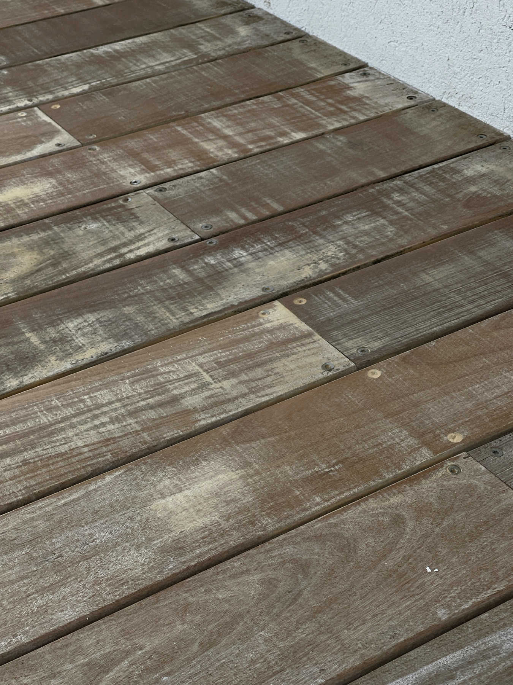
לפנימה שהשמש והמלח משאירים
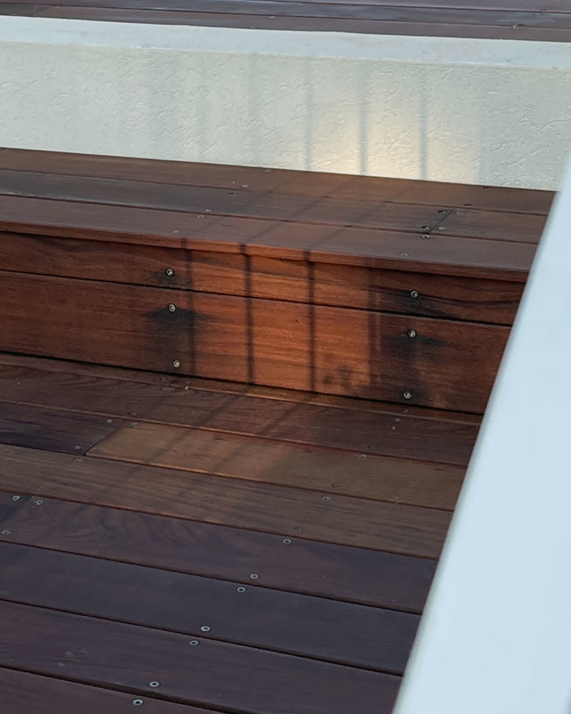
אחרימלוטש עד העץ ומשומן ביד
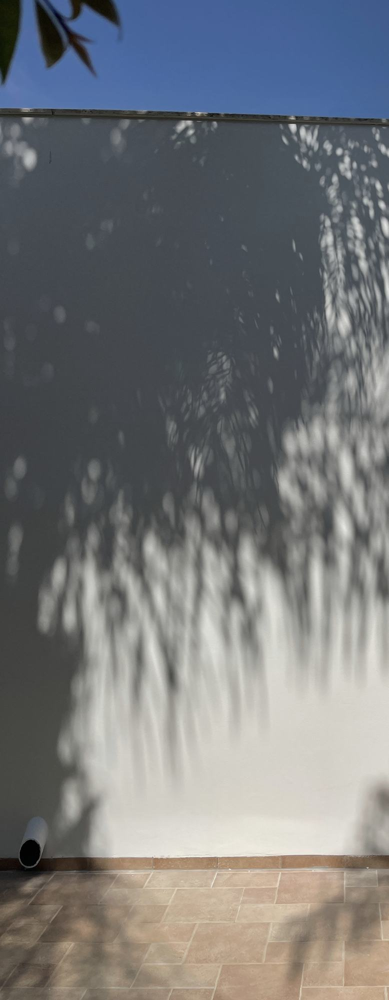
צביעת פנים וחוץ מוקפדת לבתים יפים, מאז 1984.
משפחת צבעים אחת — בלי קבלני משנה, ועם הביטחון להשאיר אותנו לבד בבית.
ספרו לנו על הבית שלכםיש לקוחות שנשארים בבית בזמן שאנחנו עובדים. יש כאלה שבוחרים לצאת ומשאירים לנו מפתח.
במשך יותר מארבעים שנה, לקוחות מרוצים המשיכו להעביר את השם שלנו למשפחה, לחברים ולשכנים. כל בית חדש הגיע דרך הבית שקדם לו. גם היום, בעלי בתים רבים ממשיכים בשגרת חייהם בזמן שאנחנו עובדים. בעינינו, זה ההישג הגדול ביותר שלנו — גדול מכל קיר שצבענו.
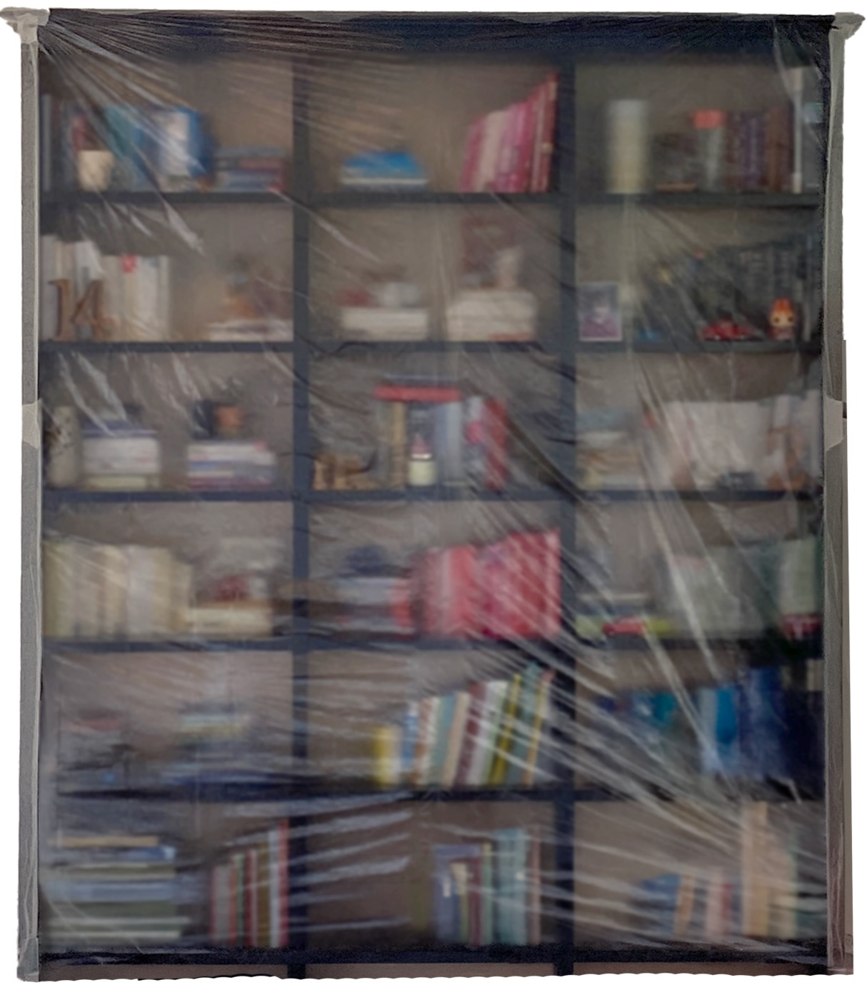
רצפות, רהיטים, מדפים, כל ספר — מכוסים ומוגנים לפני שנפתח פח צבע אחד.
סדקים נפתחים וממולאים. הטיח נעשה שלם. עץ עייף חוזר לחיים. עבודה טובה מתחילה הרבה לפני הצבע — על קירות, עץ ומתכת.
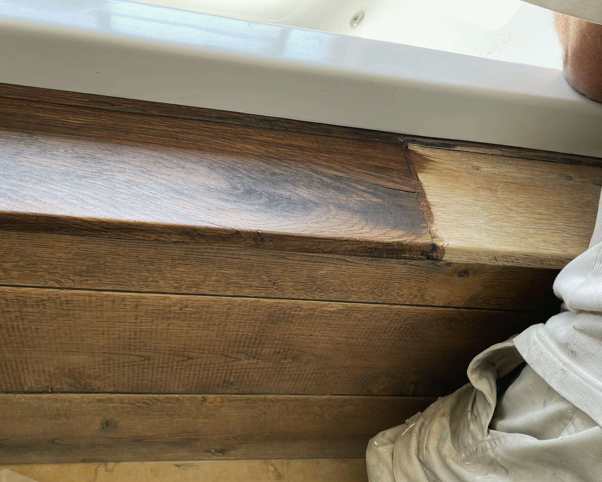

ההכנה היא רוב העבודה, והחלק שאיש לעולם לא יראה. שני דורות עובדים זה לצד זה, בשקט ובקפידה.
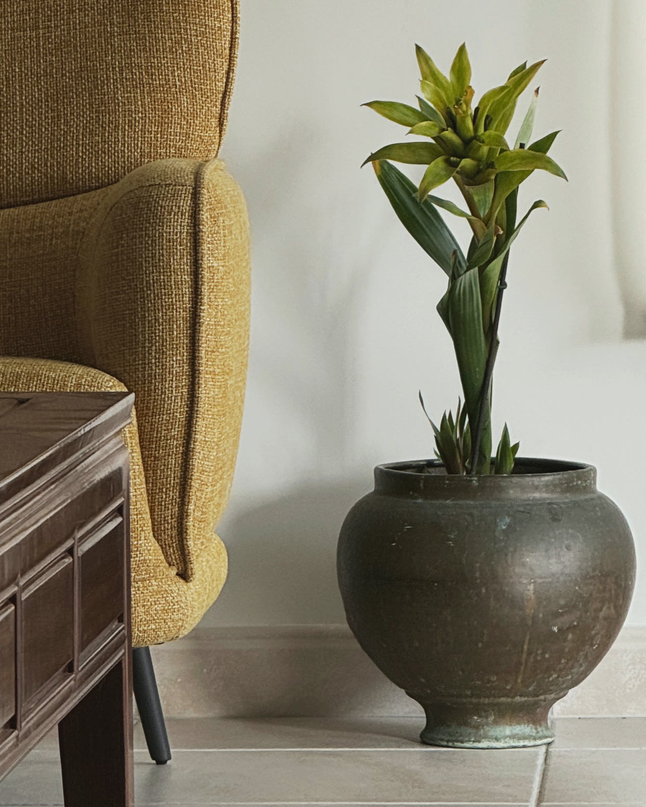
ואז הבית חוזר להיות בית.
פנים · חוץ · קירות · עץ · מתכת


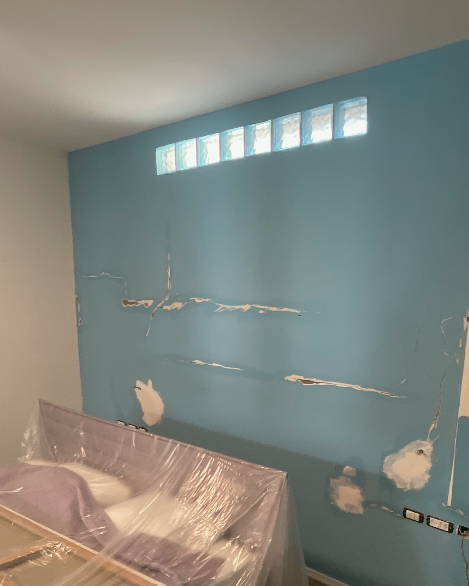
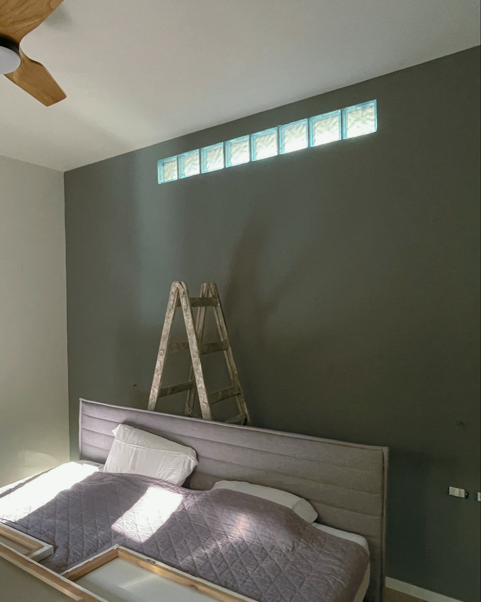
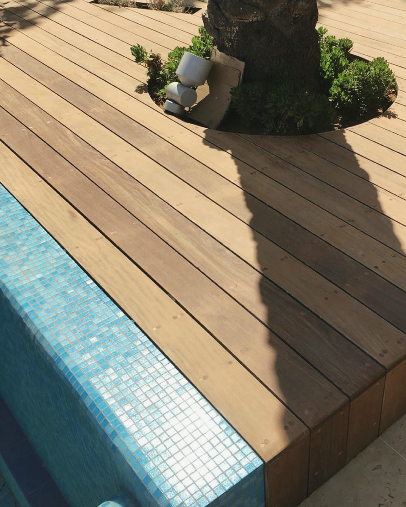
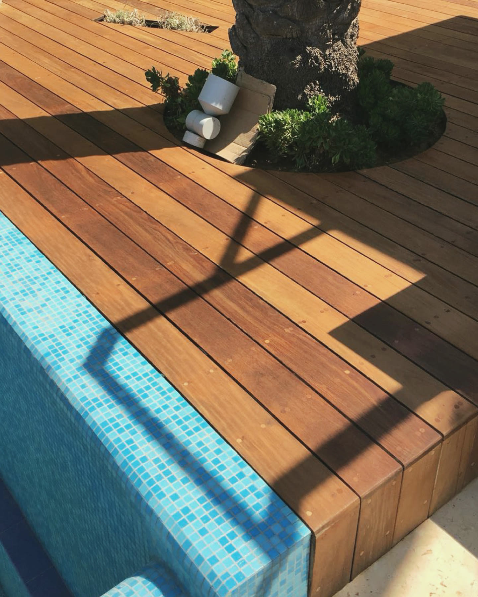
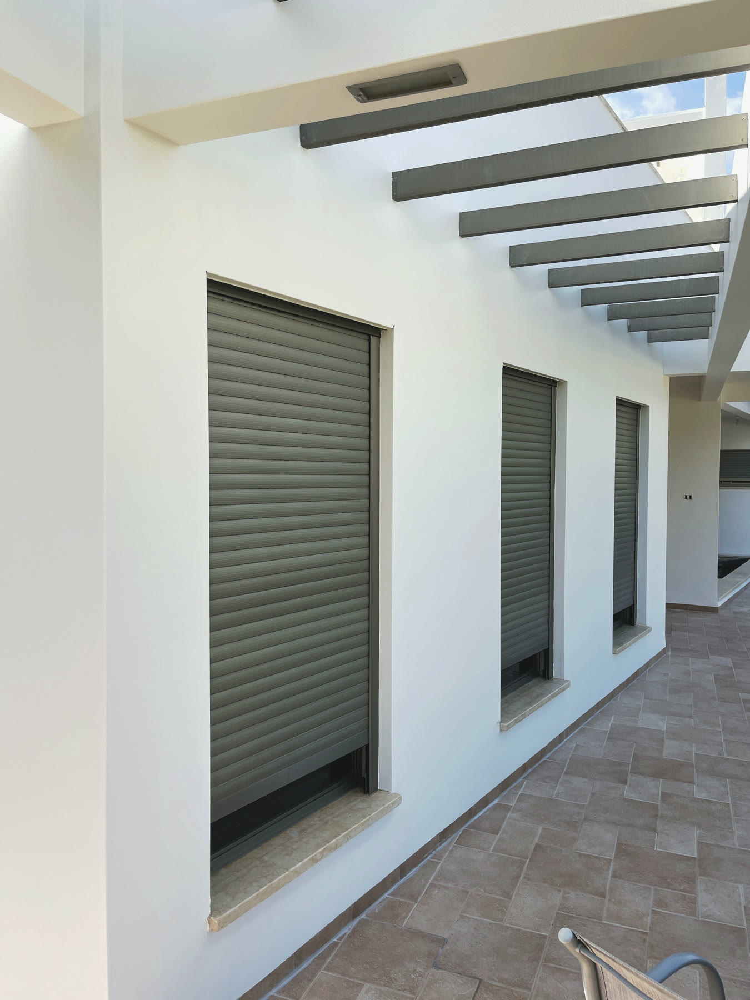
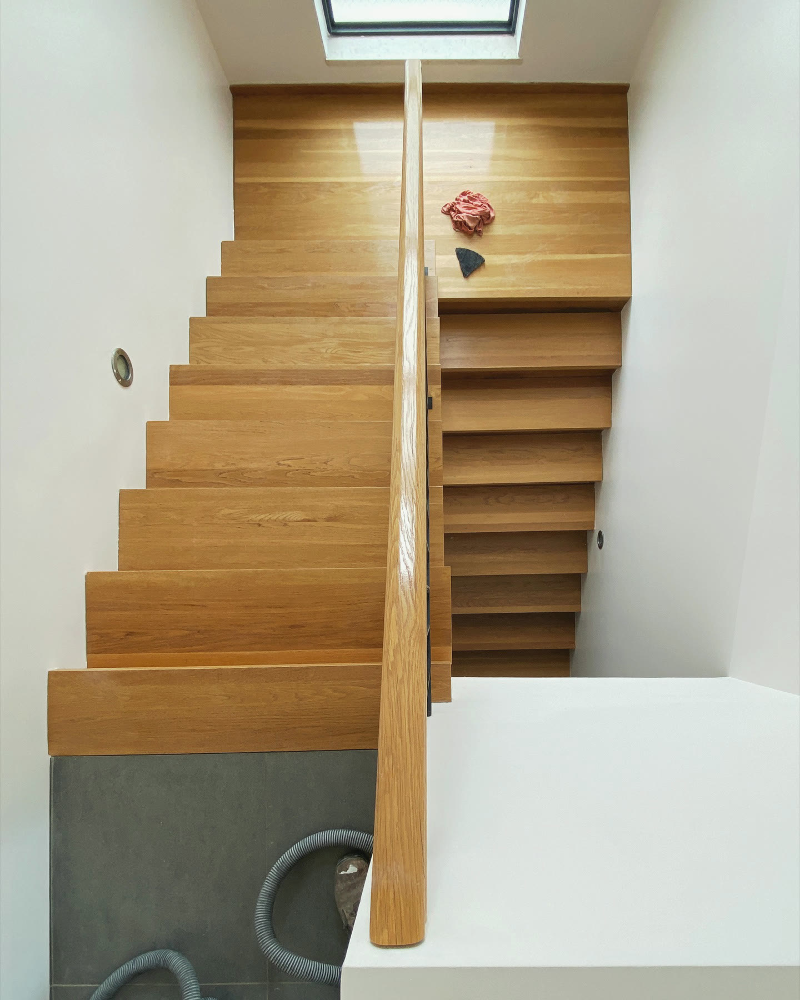
ראיד למד את המקצוע מאביו, ומאז צובע בתים ברחבי הארץ כבר עשרות שנים. עם הזמן הצטרף אליו בנו נידאל, שגדל בתוך העסק והפך את ההכנה והגימור לתחום האחריות שלו, ובהמשך גם באסל, שממשיך את מלאכת המשפחה אל דור חדש. שלושתם עובדים יחד היום, וכל עבודה שנכנסת לביתכם נושאת את שמנו.
שיחה, לא הצעת מחיר. נקשיב, נעבור אתכם בין החדרים, ונאמר ביושר מה הבית שלכם צריך — ומה לא.
אם מישהו שלח אתכם אלינו, נשמח לדעת למי להודות.
מפה לאוזן, מאז 1984